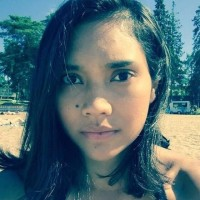

|  |
Nafisah Rantasalmi
Development Professional in the field of Disability
I have 10 years of international and national experience as a development worker serving in various capacities with focus on social inclusion of persons with disabilities. I ensure work is done in the most optimal, efficient and productive manner, and at high standards so that expectations of stakeholders are met. My areas of expertise are in project grant and report writing, stakeholder management, organisation development and management, campaign and project development, events planning, and communications. I am knowledgeable about human rights-based mechanisms such as the United Nations Convention on the Rights of Persons with Disabilities as well as the 2030 Agenda and Sustainable Development Goals, and other human rights mechanisms. I am interested to broaden my knowledge in project management, monitoring, evaluation and learning processes, stakeholder analysis, and inclusive services and experience.
|